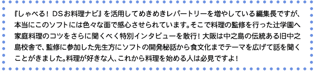
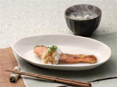
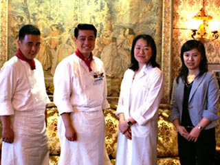

|
|
|  |
| ＮＯＭ：辻学園のお名前はよく拝見するのですが、どのような活動をされているのでしょうか？ |
| 春藤：辻学園の歴史は古く、1917年に東京の麻布で日本割烹講習会というものを設立したのが始まりと聞きます。いまは大きく分けて調理師専門学校、栄養専門学校、辻クッキングというものがあります。調理師専門学校というのはプロを育てる学校です。1〜2年ほど料理を学び、関連する資格を取得して、そのあとはホテルや料理店などの現場で働くことになります。そして辻クッキングというのは家庭料理を教える場といえるでしょうか。当然ながら調理師専門学校と辻クッキングでは教え方も異なるわけです。 |
| ＮＯＭ：両校には、どのような方々が学びに来ているんでしょうか？ |
| 春藤：やはり時代によって世間や人の考え方も変わっていきますし、変化というのは見られますね。調理師学校なら初期の頃は料理屋を営む家の御子息が多かったのですが、それがだんだんと一般の方も学びにこられるようになりました。これはテレビで色々な料理を目にする機会が増えたことが大きいと思います。料理に対して色々な人が興味を抱くようになったわけです。男女比も昔は圧倒的に男社会でしたが、いまでは調理師をめざす女性の方の比率もかなり多くなっています。 |
| ＮＯＭ：なるほど。最近では洋菓子職人の分野などで女性の進出も多く見れますしね。 |
| 春藤：反対に辻クッキングの方は昔から女性中心で、私が辻学園に入った30数年前は学生やお勤めの女性の方がほとんどでした。高校生が放課後に通ってきたりしてね。というのも、当時の女性は早い時期から家庭に入っていましたから、いわゆる花嫁修業の一環として学んでいたんです。茶道、華道、そこに料理というものが結びついていたわけです。現在ではOLの方が中心なんですが、定年を迎えられた男性も多く習いにきていますよ。教室にも『男の料理』なんてコースがあるぐらいですから。おいしい料理を作りたいという欲求は男女を問わずあるんですね。男性のなかにはMy包丁を持参されたり、器に造詣が深い方がいたりして、教える側としても緊張感があります。 |
| ＮＯＭ：『しゃべる！ＤＳお料理ナビ』の監修ではどのようなことを？ |
| 春藤：私が全体の監修を行い、収録されている200種類のメニューのレシピと料理撮影を竹村と冨岡が担当しました。 |
| 竹村：監修の話をいただいて、最初は料理でどうやって戦うんだろう？ と誤解していました(笑)。完成してみると、見たり聞いたりできる料理ガイドというのは、書籍のように読むだけのものよりも五感に訴えかけますから、覚えるのも早いんじゃないでしょうか。 |
| ＮＯＭ：収録されている料理の写真がキレイで盛り付けの参考にしています。 |
| 竹村：ありがとうございます。その点に関してはテレビ番組や書籍などでノウハウの蓄積がありますので。よく料理の盛り付けが上手くなるには、お花を習うのが近道と言われています。華道でいうところの盛り花では中心があって、それに添え物を加えて構成していきます。あれは勉強になりますよ。 |
| ＮＯＭ：なるほど。料理の盛り付けに華道が役に立つのですか。 |
| 竹村：いますぐ華道を習うのも大変でしょうから、まずは色に気を配ってみてください。これは献立を考えるときも同様なのですが、基本的には5つの色、赤・黄・緑・黒・白がポイントです。このような色が入ると料理がカラフルになり映えますね。そして夏ならあまり暑苦しくならないように赤系を少なくしたりして季節・気候ごとのアレンジを加えていくといい。なによりも相手が見て美味しそうだなと食べる気にさせることが大切です。 |
| ＮＯＭ：このソフトは旬の食材を教えてくれて献立を考えるのに便利です。 |
| 廣瀬：電源を入れると本体のカレンダー機能と連動して旬の食材やオススメのメニューを音声ガイドで教えてくれるようになっています。“しゃべるソフト”というイメージを持ってもらう意味でも良い演出になったと思っています。 |
| ＮＯＭ：この前は『土用丑の日に鰻』なんて解説が聞こえてきて驚きました。 |
| 冨岡：栄養学の観点でも旬の食材を食べるというのは正解なんですね。旬の時期が一番栄養価も高いですし、その時期に脂や旨みが増していて味も良いわけです。現在は“食育”といって、食事の栄養バランスや食習慣の乱れを正して食から健康を考えるという社会的な大きな流れがあります。『しゃべる！ＤＳお料理ナビ』をキッカケに、食材の旬にも興味を抱いていただけたら嬉しいですね。お子さんに料理のことを説明するのにもピッタリのツールだと思います。 |
| 春藤：日本人の食生活というのは、どうしても夕食にウエイトがかかっていますね。これが正解というわけではなく、欧米型ですと朝とか昼とかにしっかり食べることが多いのです。この時期に夏バテするのも朝食をしっかりとらないことが原因だったりします。ただ、生活のリズムとして夕食にウエイトを置かざるをえない場合もあるとは思います。そんなときはメニューの検索機能でカロリーに注目してみましょう。同時に朝・昼・晩で扱う食材や栄養のバランスを考えてみて欲しいですね。 |
| ＮＯＭ：収録されているレシピの中で、これを知っておけば安心という定番メニューはありますか？ |
| 春藤：最近は昔ほど家庭で煮物が作られていないようですね。そういった意味では他人に喜ばれる料理として肉じゃがなどは良いかもしれません。煮物というのもなかなか難しい料理ですが、美味しくしようと思えばどんどん手間を加えていける。また、あまり料理をした経験がないお父さんなら、まずは無理をせずにお子さんの好きな献立を作ってあげるのが一番です。小さい子は初めて見る料理をなかなかスムーズには食べてくれませんから。 |
| ＮＯＭ：料理ガイド本でなくゲーム機だからこそ実現できたことはありますか？ |
| 廣瀬：いろいろありますが、たとえば食べる人数を入力するとソフトが食材や調味料の量を計算してくれる機能は便利です。でも、ソフト開発側としては料理が持つアバウトな部分をどのようにシステムに落とし込むかに苦労しました。 |
| 春藤：そうでしたね。料理というのはじつに幅の広い世界で、定義があるようでないことが多いんです。例えば塩の使い方でも“1つまみ”があれば“少々”もあり、“適量”なんかもあるわけです。 |
| 廣瀬：加えて驚いたのが、作る分量が2人前から4人前に増えても、食材や調味料がそのまま単純に2倍の量になるわけではないということです。開発の途中で、あわてて先生方に相談したりして。 |
| 冨岡：料理の場合は2＋2＝4という味付けができないんですね。例えば煮汁だと、倍にすると汁が多くなってしまいますし、逆に半分にすると鍋の大きさによっては煮汁がたりなくなります。今回収録した全200メニューで1〜4人前それぞれの食材や調味料の分量を調節するのはなかなか大変でした。各レシピの最初に分量が増えた場合のアドバイスも加えてあるのでチェックしてみてください。 |
| 竹村：それと実際に作っていただくとわかるのですが、料理がはじめての1人暮らしの方が使う場合を想定してレシピの手順は、まず下処理を行い、調理は1つのコンロだけで作れるような進行にしています。 |
| ＮＯＭ：さすが料理を教えるプロである先生方の監修はキメが細かい！ 実際に料理を作って検証する時間もかなり必要だったようですね。 |
| 廣瀬：ユーザーの方の視点に立つために、自分でも週末など時間のある限り料理を作ってみました。また任天堂の開発スタッフのなかで料理の初心者に調理を行ってもらい、問題点についてのレポートをまとめたりしました。そのなかでやはり専門用語の意味がよくわからないという意見が出てきて、最後の段階で用語の説明を大幅に追加しました。 春藤：そういう意味では初心者にもオススメの料理ガイドが作れたと思います。最近は食卓という概念も薄れてきていると聞きます。生活スタイルの変化で、なかなか家族一同がそろって食事する機会も少ないとか。家庭円満の秘訣は食べることにあります。ぜひ、『しゃべる！ＤＳお料理ナビ』をキッカケに家族で料理に親しんでもらいたいですね。 |
| ＮＯＭ：『しゃべる！ＤＳお料理ナビ』で料理を楽しんでいる人や、これから料理に挑戦してみようと考えている人に向けてひとことお願いします。 |
| 廣瀬：最初は自分でその料理を見て“美味しそう”と感じたメニューに挑戦してみるのがいいと思います。そこから“作りたい”という意欲がかならず沸いてきますから。 竹村：まずは基本どおりに、見本の写真のように作ってみましょう。それをクリアできたら今度は食材や調理方法を自分なりにアレンジしてみてください。そうすると、料理に対する新しい楽しさが見えてくると思いますよ。 冨岡：作ってあげたい相手がいると料理はより楽しくなってきます。できた料理を家族で食べれば4〜5人、ホームパーティーを開けば10人以上の人に向けて料理を作れるわけです。食材の知識と同様にコミュニケーションも大切にしながら料理を楽しんでほしいですね。 春藤：料理というのはじつに奥が深いもので、入り込めばどんどん学ぶことができます。自分で作る以外にも外へ食べに出かけてみることも大切です。そのようにして、いろいろな面から料理の知恵を蓄積させることで、どんどん料理が好きになっていくと思いますよ。 |
| ＮＯＭ：さっそく新メニューに挑戦してみます。今日はありがとうございました！ |
|